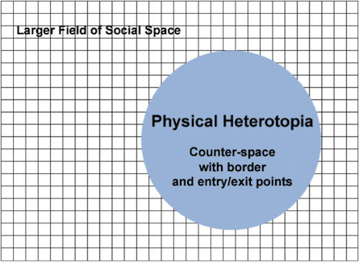
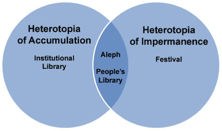
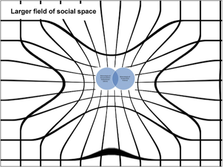
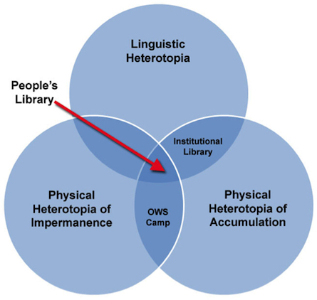
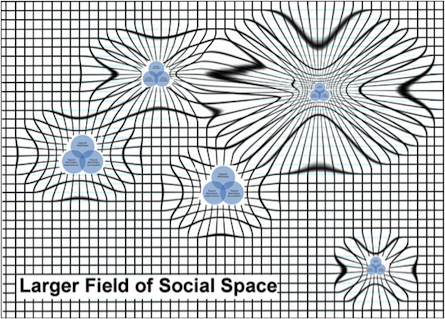

THEORY BEYOND THE CODES
OWS People's Library and Jorge Luis Borges
Radical Politics, Heterotopic Spaces, and the Practice of Hope
Sherrin Frances
Within a month of its inception, the Occupy Wall Street camp in New York City's Zuccotti Park had established a lending library that came to be called the People's Library. By mid-November, 2011, about two months into the occupation, the library had cataloged several thousand books, become housed under a large tent with proper shelves lining the walls, and put together a staff and various services for its patrons. Visitors could browse, ask librarians for help locating particular items, and immerse themselves in words and texts, all while surrounded by the chaotic resistance of the larger OWS experience. But among these regular activities was an undercurrent of tension: the librarians were in constant struggle with the park authorities regarding the permanency of their space. They needed to know what kinds of boxes, tarps, and tents were permissible. They worried over how they could best protect the books from the elements. They generated contingency plans for disassembly and mobility. Then, on the night of November 15, the park was raided: the library was unceremoniously dismantled, participants evicted, and books and related objects confiscated or destroyed by police.
The permanency that participants seemed to be working toward that fall signaled an optimism that understandably shifted after the November raid. Jaime Taylor and Zachary Loeb, two original OWS librarians, write that while the library had a steady stream of foot traffic and contributions before and after the raid, after November 15 visitors typically "came with lamentations over the loss of the library proper rather than with book donations." [1] Stephen Boyer, another OWS librarian and the OWS Poetry Anthology editor, later said, "we were all heartbroken mid-November, when the NYPD came and squashed the park." [2] The fast rise and fall of the original People's Library installation was disheartening and signaled in many ways a loss of hope--not only for those directly involved, but also for like-minded and sympathetic readers across the U.S.
Despite this abrupt and negative end, the emergence of the People's Library is much too meaningful to file away as a short-lived footnote within the OWS narrative. It is a complex, uncanny space, and a turn toward the similarly uncanny fiction of Jorge Luis Borges may help us to better understand its significance. Borges's work can be read as a metaphorical precursor to the People's Library. Metaphor, as Borges tells us, is the tool with which writers have traditionally "disordered the rigid universe," [3] a disordering that the People's Library also seems to work toward. Borges's stories and the People's Library both embody a particular convergence of variables, and the spaces that emerge force important questions about distributions of power and coping mechanisms in the face of external, uncontrollable, political currents. A deeper understanding of the connection between Borges and the People's Library may even affect the structure of hope with which we face politics in the 21st century.
Borges, Politics, and Heterotopias
As an adult, Borges lived in a politically tumultuous time. He had contentious relationships with Argentinean leaders and ongoing concerns about both the spread of fascism and the spread of capitalism. In his 20s, he was a radical poet who promoted the "ultraísmo" movement, an expression of "the anarchist revolt of the petit bourgeois intelligentsia against banality and narrow-mindedness." [4] This became a time in his youth that he later publicly regretted. By his late 20s, he had published some essays supporting the views of the controversial populist leader, Juan Manuel de Rosas. In response, several critics "hurled sophistries and maledictions at me" and attacked him both "in the name of skyscrapers," and "in defense of the tin shacks." [5] That is, both the rural and urban camps in the political debate were upset with him. He then threw his support behind the Radical Civil Union candidate, Hipólito Yrigoyen, who advocated liberal democratic notions, including rights for workers and expansion of enterprise with social mobility. However, Yrigoyen's ineptitude at politics, management, and budgeting left the door open for a military coup and a hostile, conservative regime change. After watching so many seemingly strong, liberal politicians turn or fold in the face of Argentina's combustible political climate, "like many of his generation, Borges' disgust with politics became complete." [6] Finally, in the 40s, Borges became well known for speaking against Perón for many reasons, not the least of which was Perón's generosity toward the Nazis. In 1946, he wrote, "The most urgent problem of our time . . . is the gradual interference of the State in the acts of the individual." [7] Though not usually stated so overtly, his concern with the effect of government on individuals, specifically the Argentine citizen and what it means to "be Argentinean," underlies a great majority of his writing.
Despite the influence of this background, Borges's short stories are not usually read through a political lens by most critics and theorists. "Borges's reputation in the world has cleansed him of nationality," writes Beatriz Sarlo, who adds that his work has undergone a "triumphant universalization." [8] Michael Greenberg points out in The New York Review of Books that "the deeply Argentinian nature of Borges's work is often camouflaged by his metaphysical preoccupations and far-flung literary references." [9] Indeed, these "metaphysical preoccupations" do seem to be the most household elements of his work.
Frequently, critics draw parallels between his ideas and the web, virtual reality, and twenty-first-century networking/connectivity. Noam Cohen says that "a growing number of contemporary commentators--whether literature professors or cultural critics like Umberto Eco--have concluded that Borges uniquely, bizarrely, prefigured the World Wide Web" [10]. For example, Borges's 1949 short story "The Aleph" is often read as a metaphor for the Internet or a search engine, and most references to "The Aleph" address the fascinating lists of objects that the characters observe. In the story, it is possible to see "the place where, without admixture or confusion, all the places of the world, seen from every angle, coexist." [11] At one point, the narrator sees "clusters of grapes, snow, tobacco, veins of metal, water vapor, saw convex equatorial deserts and their every grain of sand, saw a woman in Inverness whom I shall never forget, saw her violent hair, her haughty body, saw a cancer in her breast, saw a circle of dry soil within a sidewalk where had once been a tree. . . . " [12] No doubt, the random and unexpected nature of some Google search results come to mind.
But focusing on an excised, though intriguing, list of visions in the Aleph pushes the relationship between Borges's characters and his use of space too far outside our frame of view. The story does not end with the description of the Aleph. The story ends with the narrator's recovery from the experience. "I come now," he says after seeing the Aleph, "to the ineffable center of my talk; it is here that a writer's hopelessness begins." And as he leaves Daneri's house, he says, "I feared there was nothing that had the power to surprise or astonish me anymore, I feared that I would never again be without a sense of déjà vu." [13] The narrator's powerful reactions of hopelessness and fear emerge through his encounter with, and then ultimately his loss of, the heterotopic space of the Aleph. It is a space tied to, but distinct from, the politics and power of social space, one that has a unique set of properties and capacities, and one that can better help us understand the relationship between the individual and the State.
The Physical Heterotopia

Figure 1.
The most common definition of a heterotopia is as a particular structure of physical and living space, a description often referenced in the later work of Michel Foucault. Foucault's concept of a heterotopia in the real world is very generally a "range of 'different spaces' that somehow challenges or contests the spaces we live in." [14] He catalogs a series of principles, a "heterotopology," to better define the concept, which specifies that they are "set apart for some form of rites of passage, or initiation" or for "some form of deviation." [15] They are usually spatially grounded in "a meticulously arranged enclosure," and sometimes control borders and entry/exit points. In order to enter a heterotopia, "the individual has to submit to rites and purifications . . . have a certain permission, and make certain gestures." [16] Most importantly, a heterotopia defies the predictable structure and rules of social space within a certain set of boundaries. It functions as a "counter space [which] refer in some way or another to a relational disruption in time and space." [17]
The Aleph, for example, is described as only a few centimeters wide, but it contains "universal space . . . with no diminution in size." [18] The rest of the story, in contrast, takes place in a fairly pedestrian setting clearly immersed in social space. The narrator regularly visits a man named Daneri who lives in his family home, "the home of my parents--the home where I was born--the old and deeply rooted house on Calle Garay." [19] Daneri does not invite many people into his home, making it a protected, secure space, and the Aleph is firmly embedded within the even deeper heterotopic boundary of the home's basement where an unusual set of rules applies. The narrator is both excited and nervous when he has a rare opportunity to cross the border into the space of the Aleph. However, not only does he need to enter the house, he must lay on a certain step in the basement, in the dark, with his head at just the right angle. It is a precarious, perhaps even dangerous, position.
The library within Zuccotti Park loosely paralleled this situation: no one could access the heterotopic library unless they entered the park that housed the OWS camp and then crossed the particular border into the library space. Unlike Daneri, the security forces patrolling the area were not even OWS-friendly, much less "family," and when present, they controlled the border and created a sense of precariousness and insecurity for those inside. Simultaneously, the People's Library (and OWS as a whole) claimed a certain ownership by occupying that particular space, and at times they seemed to control the border. Although ownership of the library was not as clear-cut as Daneri's ownership of his private home, a border nonetheless emerged and the danger in crossing it varied with the daily politics.
Once inside, it might have seemed like the People's Library was actively working to reflect "normal" social space rather than to challenge it through heterotopic space. In fact, Taylor and Loeb write that one stereotype was that "OWS was supposed to be a bunch of dirty stupid hippies who needed . . . to get a job, to grow up, and be responsible for ourselves." Yet, they say "visitors to OWS were both surprised and then comforted by the presence of the library . . . the surprise always preceded the sense of familiarity." [20] Before the November 15 turning point, the library maintained a physical presence, including shelves and a visible system of organization. It was provided with regular staffing who created a catalog for its collection of several thousand books. Time Magazine Newsfeed reported in October 2011 that "there are between 2,500 and 4,000 volumes in the park, with more in storage." According to the same article, "the most popular books on offer seem to be what one would expect: leftist tracks on history and politics by authors like Howard Zinn, Noam Chomsky and Naomi Klein" [21]--although the library did not discriminate, and all manner of politics were represented on the shelves. The catalog also ran the gamut of literary taste from Hakim Bey's T.A.Z. to Guy Fieri's Diners, Drive-ins, and Dives to a Harlequin romance called If the Ring Fits to (of course) many of Borges's texts. [22] Such a wide variety of entries could have provided reading materials for the regular cross-section of readers that any typical institutional library might serve.
But the library's attempt to mirror a familiar structure actually presented a radical challenge to the rules of the surrounding social space because, at the same time, it attempted to conflate the regular hierarchies of order. Many forward-thinking, institutional libraries also strive to flatten hierarchies within their spaces, but Taylor and Loeb point out that there is never a complete flattening in such situations: "There were still bosses and supervisors; people with more power and people with less." The People's Library moved beyond this by maintaining that "the human cost of lack of control must always be kept in mind. . . . Working group members were (and remain) responsible only to ourselves, our fellow librarians, and our patrons." Within the borders of the People's Library, "free access to knowledge was in, while vertical and authoritarian organization were out." They seated librarians and maintenance and support staff next to one another at the discussion table, for example, giving all working group members an equal voice in a non-traditional and uncommon way. Due in large part to this kind of egalitarian approach, as well as the sense of permanence that the space had obtained and the organized nature of the work at hand, the future of the library seemed "promising, and the park was filled with optimistic talk about weathering the winter." [23] Just as Borges's narrator experiences excitement and anticipation as he descends into the unfamiliar basement, crossing the border into the physical heterotopia of the People's Library, however briefly, seemed to bring with it a similar thrill.
Doubling the Physical Heterotopia: Accumulation and Impermanence

Figure 2.
Foucault's heterotopology goes on to break the generic physical heterotopia into a series of variations. He specifically includes libraries and museums, which he says are heterotopias of "indefinitely accumulating time," spaces "in which time never stops building up and topping its own summit." [24] Foucault presents this space of accumulation in contrast to another heterotopic space that he calls "absolutely temporal" and "fleeting": the festival or fairground. The Aleph falls between these two physical heterotopias (fig. 2). It is clearly a space of accumulation, "a place of all times." Borges's narrator calls it "the inconceivable universe." And yet, it is also a space that is impermanent. The narrator makes a curious claim in his postscript to support this: "I believe that the Aleph of Calle Garay was a false Aleph." Daneri may call his space an Aleph, but the narrator speculates he actually mislabeled it. Other false Alephs exist and have been documented, but they all share "the defect of not existing." [25] The real Aleph still exists, he believes, somewhere in Cairo. False Alephs are capable of being destroyed, and in fact, Daneri's Aleph is destroyed by the end of the story. Impermanence and repetition seem, then, to be traits of the (false) Aleph in Borges's story.
The People's Library, emblematic of the general protest library at the heart of this discussion, should also be posited somewhere between these two types of space/time relationships. It is a space of permanency and accumulation just like institutional libraries. But it is also differentiated because of its impermanent and fleeting nature. As Taylor and Loeb write, on the night that the People's Library was destroyed, police and security closed the park perimeter and restricted the movements of protesters and librarians. New York City Mayor Michael Bloomberg said protesters could return when Brookfield, the park's owner, was finished "cleaning" the park. [26] By then, only a skeleton of the original library site remained: 1,275 books were recovered from trash bins, "with only 578 books in readable condition. That means 79% of the original library is gone or destroyed." [27] The People's Library reinvented itself soon after as more nomadic and with a different, smaller collection, and it carried on for another two years or so. But even "only" 500 books are a heavy archive of material to move and store, and the logistics were difficult to maintain.
Ultimately, the People's Library disbanded. In 2013, the librarians concluded a successful lawsuit against the city for the destruction of their materials. They currently are in the process of sharing the awarded money and the remaining books with other like-minded groups and causes. The archived catalog is still available online as a lingering shadow of the library's heyday, and it includes 9,500 entries. [28] But the physical People's Library itself no longer exists: the physical demands of the accumulated archive opposed to the permanent impermanence it faced were simply too much to sustain.
Double Heterotopia as Attractor

Figure 3.
This conflation of two competing types of heterotopic space brings with it a particular undercurrent that sets the protest library apart from other general heterotopic spaces. A tension builds between the drive to accumulate and the drive to move--not only to move, but sometimes even to self-destruct as an outcome of the nomadic, "fleeting nature" that the space embodies. The tension within this particular type of heterotopia can be described as an intensive property of the space. Manuel Delanda says intensity is a property measurement usually focused on things like speed, temperature, pressure, and density, and that these properties drive flow and mark spontaneous changes of state. [29] Within the border of a double heterotopia protest library, when the tension reaches high enough level of intensity, an entirely new spatial property emerges: the space becomes an "attractor" (fig. 3).
While a basic physical heterotopia is identified by a border, the emergence of an attractor within that boundary will then begin to draw other elements outside its border toward it. The pull of an attractor, according to Delanda, is similar to the pull of a black hole in space. [30] In the current examples, the Aleph and the People's Library act as small, heterotopic attractors that threaten to pull the flow and expansion of capitalism off its course within the larger field of social space.
From this perspective, the external social space--the one predicated on labor and capitalism, the one against which OWS was struggling so vehemently--is necessary for the People's Library to exist in its heterotopic potential. Social space is predicated on formal hierarchical structures and Marxist notions of work and production, and the "counter space" of a physical heterotopia emerges as a radical challenge to these tenets. The heterotopia must be beside or embedded within social space as a point of contrast. We wouldn't see this kind of space emerge, for example, from natural or mental space because they do not entail production as part of their foundations. [31] That is why, too, in story after story, Borges portrays a physical heterotopia that is embedded within traditional, yet threatening, institutions of power. And each time, the attraction of the double heterotopia slows the threat by pulling it off course.
In "The Aleph," for example, Daneri learns that a nearby café is planning an expansion and that the café's owners plan to tear down Daneri's house. The fear of losing the home that contains the Aleph prompts Daneri's claim, "It's mine, it's mine . . . Zunino and Zungri shall never take it from me--never, never! Lawbook in hand, Zunni will prove that my Aleph is inalienable." [32] He seems to have the money and the time to mount a legal battle with well-known lawyers, slowing the café's owners' plans. The expansion of social space, of politics, of capitalism, of productivity, and of commerce is a threat to the Aleph, a threat against which Daneri fights bitterly and, ultimately, futilely. Eventually, Daneri's house is destroyed, and along with it, the heterotopic Aleph.
In the case of the People's Library, the press it received from outlets such as the Huffington Post and the New York Times generated a response from other protesters and readers around the world. OccupyWriters.com was launched, and hundreds of writers, including Salman Rushdie, Neil Gaiman, Margaret Atwood, and Alice Walker signed the digital petition in support of the library. American Library Magazine reported, "Along with the movement, Occupy libraries are spreading. There are libraries at Occupy Boston, Occupy Seattle, Occupy L.A., Occupy Portland, Occupy Dallas, Occupy San Francisco, and elsewhere among the more than 100 Occupy sites in the United States that have sprung up since September 17." The article goes on to claim that "it is becoming a part of the working model of long-term occupation sites that they have a library." [33] People's Librarian Betsy Fagin says they all worked together to form a coalition and make connections: "Books are being published about the Occupy movement, professors are teaching courses on it, and students are studying what we have already done. We mean to be an integral part of these conversations." [34] The People's Library helped prolong the sense of purpose and resistance driving OWS and many other groups.
Our inclination is often to root for the success of the heterotopia as an underdog of sorts, and when it is gone, to remember it fondly. In this case, nostalgia seems to be growing for the People's Library. It is a sort of inverted homesickness and a longing for the now-absent contrast of spaces. Taylor says that "many people experienced the occupation, library included as community, and now so often speak of missing that sense of it; it contrasts sharply with the alienation of the regular world social space of capitalism." [35] The blog Librarianshipwreck goes even further and says that the library is one of the aspects of OWS that "people remember fondly. . . . Elements like the library seem to stand out in people's memory as successes." [36] But we must be cautious not to romanticize the memory of the heterotopic protest library. We run the risk of questioning how we might have empowered the heterotopia to overcome social space or become permanent. True, as David Harvey says, Foucault's "presumption is that power/knowledge is or can be dispersed into spaces of difference," [37] and heterotopias have power. But the revolution that would do away with conventional social structures and diminish the difference between the social/heterotopic spaces would also inadvertently, and necessarily, do away with the heterotopias that incited the change to begin with. The heterotopia is a form of resistance, but ultimately one that cannot--should not--overcome the dominant force: the minute that happens, the heterotopia ceases to be. Heterotopic spaces must remain in a symbiotic, tensional relationship with the rules and oppression of social space.
Complicity with Social Space
In fact, without the surrounding social space that allows them to function as attractors, the Aleph and the People's Library would lose significant power. This is the situation Borges creates in "The Library of Babel," a short story in which the titular library is an imaginary heterotopia of accumulation with no exit. The Library of Babel is composed of an infinite, uncountable number of books whose content includes all possible pasts, all possible futures, every combination of all the alphabetic letters, and books set within other books. But in the story, there is nothing outside of the library. Borges does not embed the Library of Babel in social space: it is absent entirely.
Because there is no external social space, the librarians in the Library of Babel are inside the otherness of a heterotopia with no tension against the reality of the politics, productivity, and economics of social space. Without any flux or movement between the two kinds of spaces, they have no structural point of comparison, no external variables to slow or pull off course, and no hope of escape. According to Johnson, heterotopias "are a form of escape without the comfort of a home." [38] Borges's librarians long, in some ways, for the familiar structures and rules of capitalism, production, and desire because these structures underlie our notions of family and home.
This longing leads the characters to search incessantly within their own rigid structure. This is the primary activity described in "The Library of Babel." They search for particular books, for communities, for connections to their past. In many ways, this kind of drive sounds similar to what the People's Library might have experienced. A big component of the People's Library was the work at hand: "Professional or not, many ended up in the Library working group in order to have something concrete to do; the library was one of the sites where there was always work." [39] They were very busy organizing, cataloging, and providing "traditional" services to folks who crossed the threshold into the library. They exhibited a clear drive to create an order from the files and boxes of books being donated:
The pile became a hill, which became a mountain, which garnered the attention of a few individuals who took it upon themselves to try to keep the books dry, mark them "OWSL," put them in boxes, and begin thinking about how to keep them safe and organized. [40]
As the structure began to emerge, they were more easily able to provide advice and location services to patrons. Finding books became easier. Systems and connections developed. Their drive helped to sustain the library and provide the librarians and patrons with a sense of meaning. It helped them maintain optimism and hope that their work was providing value.
Despite the work of searching and finding, neither the Library of Babel nor the People's Library report any economy, per se. Any work they do seems to be of their own volition and without compensation. It might be considered what Taylor describes as "happy non-work work." [41] In Borges's description, aside from bookshelves, railings, and lightbulbs, the only objects that seem to exist in the Library of Babel are mirrors and dice, common icons of chance and gaming rather than economy. There is no mention of money, trade, or the value of any given object. The one product that does exist, the book, is inexhaustible and escapes an economy of scarcity. Borges does describe some of the inhabitants as "greedy individuals," but, for the most part, "all men felt themselves the possessors of an intact and secret treasure." [42] So, too, with the People's Library. As Taylor and Loeb say, "a library is one of the few spots where people can enter for free, access materials for free, and stay without being expected to buy anything." [43] In both spaces, everyone is a librarian and everyone owns all the books, presumably equally.
In the Library of Babel, though, the equality of book ownership brings with it not a sense of community and hopefulness, but one of anxiety because of the ill-defined and shifting structures of power. At one point, when faced with a blasphemous sect that "proposed that the searches be discontinued," the "authorities were forced to issue strict orders" and soon "the sect disappeared." At another point, "Purifiers" begin traveling through the library destroying "worthless books." "They would invade the hexagons," says the narrator, and "show credentials that were not always false." [44] So while everyone is a librarian, there are also chiefs, inquisitors, and authorities. These titles imply a power structure, but one that is not provided in any detail. This contributes to the anxiety and unease experienced by the narrator and other inhabitants. They have roles as librarians, but they don't know where they stand regarding these shifting hierarchies. It is not clear whether they are beside them or incorporated into them, or how they might be both at the same time. This situation is reminiscent of the shifting power held by police, the park owners, and, to borrow a phrase from Taylor and Loeb, "suspected agents provocateurs." As Stephen Boyer intimates, the rules seemed to change daily, [45] so in some ways, the coping strategies for the Library of Babel and the People's Librarians are necessarily similar.
Fortunately, the Library of Babel is an anomaly. And, fortunately, social space existed as an exit from the People's Library so that the People's Librarians had a baseline of measurement. Johnson notes that many critics who have addressed the notion of heterotopic space have maintained a "persistent association with spaces of resistance and transgression." [46] However, as the Library of Babel helps us understand, while heterotopias are related to the question of power, it is not in the form of pure resistance that we might assume. Social space and all that it entails (productivity, economy, politics) must exist beside or around the heterotopia so that people have the ability to escape to a place where structures are familiar and relatively stable, despite the inequality and injustice that such structures bring with them.
Triple Heterotopias: Adding Language
Based on this initial discussion of physical heterotopias, in many ways the People's Library is no different from the New York OWS camp as a whole. It is possible to read OWS as a double heterotopia where physical accumulation and impermanence converge; as an attractor that changed the flow of capitalism for a time; and as a space with a complex, symbiotic relationship to social space. But while we began by defining the heterotopia simply as a counter space within a physical boundary, we now add that heterotopias can also be defined and identified in terms of language. Part of the power of the Aleph and the People's Library is that they are simultaneously physical and linguistic heterotopias, which distinguishes them from protest movements proper. They are not just double heterotopias: they are triple.
The Dictionary of Geography defines a heterotopia as "the coexistence in an impossible space of a large number of fragmentary possible worlds." [47] The OED says that a heterotopy means "displacement in position, misplacement." Literally, from Greek of hetero and topos, it means "other place," or different place." [48] And the etymology of topos also includes the fundamental idea of topic: one's place in terms of language and rhetoric. In this definition, then, a heterotopia is a series of incompatible worlds-as-topics that can exist next to one another only in language. This is different from the idea of a utopia, which is defined as an impossible world, one that "refers to projects for social change that are considered impossible." [49] A utopia is literally "no place." But a heterotopia is not impossible. By definition, it is not "non"; rather, it is other. Both of the current examples, the Aleph and the People's Library, fall into this new category.
As with most of Borges's heterotopias, the Aleph is not a dreamlike mental state: a character cannot simply close his eyes and imagine alternate worlds. It is a clearly defined object that exists in a very particular place in the physical reality of the story's setting. But the Aleph doesn't fully emerge until the narrator relates the list of visions that can exist next to one another only on the page or through his voice.

Figure 4.
The People's Library fits this model, too. It exists under a tent with its own particular lending rules, systems, and objects, so it is a physical heterotopia of accumulation. And because of the ongoing cycle of destruction and reinvention, it is also a physical heterotopia of impermanence. And it is grounded as a collection of books, a space based on the accumulation of texts and words, so it is thirdly a heterotopia of topos. People's Librarian Mandy Henk underscores this conflation of physical and linguistic when she describes it as "a fort built of boxes of books--of ideas, of stories, of hope." [50] The doubling of linguistic and physical is partially what makes all libraries so seductive. It modifies the way that the internal tension functions, and it becomes another instance of an attractor: libraries draw us in. But again, the physical heterotopia of a protest library is also a folding of accumulation onto impermanence, a third fold not found in the institutional library. The People's Library has an even greater intensity because it is triple.
Custodial Weariness
The same attraction of the triple heterotopia that affects the flow of capitalism and social space also affects the individual people in circulation around the space, in particular those who are the closest to these borders: the custodians of the heterotopias. These are the people and characters who take on the responsibility of tending to the heterotopic space, and as they lead the charge against the pressures and threats of social space, they travel the continuum between [hope | joy | euphoria] and [solitude | despair | anxiety]. They are pulled toward the triple heterotopia, and they experience a tension between their desire to cross its border and their desire to remain within the familiarity and security of the surrounding social space.
We see this repeatedly in Borges's stories. Daneri, who discovered the Aleph when he was a child and keeps it as his own special secret within his house, says he eventually came to "understand that he was given that privilege so that the man might carve out a poem!" But the pressure of the surrounding social space, the pressure that threatens the Aleph, leaves him "upset," "dejected," "angry," "distressed," "laconic," "indifferent," and "anxious." In another of Borges's short stories, "The Garden of Forking Paths," the heterotopic space is embodied in a chaotic draft of a novel called The Labyrinth that simultaneously tells all permutations of every story. It is cared for by Dr. Stephen Albert, who studied the novel zealously for decades, and the first thing he says as he greets the narrator (who is there to kill him) is, "I see that the compassionate I P'eng has undertaken to remedy my solitude." [51] In another story, "The Book of Sand," the narrator eagerly purchases a book that contains literally an infinite number of pages. "I showed no one my treasure. To the joy of possession was added the fear that it would be stolen from me." [52] Eventually, he begins to see it as "an obscene thing" that "defiled and corrupted reality."
This tension results in degrees of weariness, despite initially high levels of hope and optimism, for the People's Librarians as well. In an email, Taylor says the strength that she finds in her work is a blend of optimism and pessimism: "Rather than thinking it'll turn out ok, we see that it almost certainly won't unless we, and many others, actively do something about it." She says she "can't stand the 'hope' narrative" because she has seen it so often used as an excuse for complacency and inaction. [53] And of the People's Library itself, Taylor and Loeb write that as of April, 2013,
We no longer have the capacity to rebuild the People's Library as it was, besides which we'd probably find our collection in the garbage again and ourselves in jail in short order if we tried. We plan to use the settlement money to empower other groups that do the kind of library and education work we did. [54]
So in a sense, the library lives on. However, the co-mingling notes of hope and of defeat in their words are undeniable.
Hope: From Knowledge to Repetition
When faced with a triple heterotopia, we can't help but feel a sense of awe: it is actively pulling us toward it, and we want to be close to it, but it is terrifying at the same time. Crossing the border not only offers the potential to better understand language as an artificial structure, but also to better understand the separate--but complicit--relationship language has with the politics, economics and government of social space. Language poses a radical challenge to everyday space, but because of its ties to social space, the more we try to affect permanent change, the wearier we become, and the less hopeful we can be of a permanent, positive outcome.
Borges works as a writer, as an Argentinean citizen, and as a universal "individual" to understand his relationship with politics. In order to bring these ideas to the forefront, he explicitly confronts triple heterotopias in his fiction. As the narrator in "The Aleph" says, "Every language is an alphabet of symbols the employment of which assumes a past shared by its interlocutors. How can one transmit to others the infinite Aleph, which my timorous memory can scarcely contain?" [55] The narrator in "The Library of Babel" says "to speak is to commit tautologies." [56] In all of Borges's stories that include a triple heterotopia, a custodian laments over the seduction and then the inadequacy of language to help him articulate, build and/or maintain the kind of truth he experiences when he crosses the border.
These moments of hope within Borges's work are abundant, but brief--not only in his short stories, but in his non-fiction as well. For example, he writes in 1926 that "language is an efficient ordering of the world's enigmatic abundance. . . . Languages construct realities." [57] In this particular essay, he is seeking "a deliberately poetic vocabulary, a record of ideas incompatible with common speech." Ultimately, he acknowledges the unattainable nature of the sentiment:
I know there is something utopic in my ideas, and a distance between intellectual possibilities and real ones, but I trust in the extent of the future and that it will be no less generous than my hope. [58]
Much later, in 1946, he was working with the same theme as he discussed a unique, language-based taxonomy that had been developed by a thinker named John Wilkins. Borges says of Wilkins's creation of language "there is no classification of the universe that is not arbitrary and speculative." But he continues: "The impossibility of penetrating the divine scheme of the universe cannot, however, dissuade us from planning human schemes." Here, Borges recognizes that despite the many failures of language, is human nature to keep trying. And each new attempt does offer, from one moment to the next, the hope that a structure capable of "penetrating the divine scheme of the universe" [59] might be achievable through the use of language.
Although unsustainable, the repetition of these hopeful moments suggests a different reading of Borges's hope. For one to hope that, at any particular moment, the creation or destruction of a structure will reveal some kind of "Truth" is utopic in nature. It leads inevitably to disappointment, perhaps even to a Heideggerian sense of angst that there is nothing there, no truth to be had at all. Critics reading hope in this way will call Borges a pessimist. But reading a wider slice of Borges's work will reveal a distinct repetition of complex, heterotopic moments which address the function of language within conflicting tensions, emergent attractors, and contrasting types of space. As the narrator in "The Library of Babel" says,
If an eternal traveler should journey in any direction, he would find after untold centuries that the same volumes are repeated in the same disorder--which, repeated, becomes the order: the Order. My solitude is cheered by that elegant hope. [60]
And so we see that Borges's hope is not for a durable, lasting, accumulative moment, but rather for the series of repetitive, sympathetic, tensioned moments that lend themselves to the nature of triple heterotopic space. It is a thoughtful, long-term, provocative exploration of the structure of politics and the communication of resistance through the contrast of heterotopic and social spaces. Tied together, the series of Borges references suggests that hoping for change to the individual/state relationship will not be found through durable, structural knowledge, but through the hope of repetition.
And So On: The Disorder, Which Repeated, Becomes the Order

Figure 5.
Following Borges's lead, we should shift the frame of view away from the dashed hope of the physical existence of the People's Library and see, instead, the hope of repetition. From this perspective, the closure is not cause for permanent weariness. The People's Library is unique in that it received a lot of media attention and struck a chord with American readers due to the overt destruction of books. But it is not uncommon for a resistance movement occupying a physical space, even those movements outside of the Occupy network, to incorporate some form of protest library.
The People's Library was actually preceded by the Biblioteca Acampada Sol in Spain. The Biblioteca sprang from a large demonstration in the public Puerta del Sol in May 2011. The group took the slogan "Youth without a future, without a house, without a job, without a pension, and without fear" and protested austerity measures that the government supported. [61] This is the group that became the model for the New York City OWS encampment. In October, 2011, Biblioteca Acampada Sol sent a "Letter of Solidarity" to the People's Library. In the letter, they talk about their own history, and it is remarkable how much it parallels the People's Library: "We should say that none of us decided to open up a library during our occupation, it appeared by itself," beginning with a few dozen books. A tent was erected, poets came for readings, donations began. The media "describes us as bums . . . we slept always waiting for the final police riot. . . . We had time for joy and also for despair." They say that in the midst of their own weariness, when they heard about the People's Library, they celebrated it as the birth of a new family member. "You don't realize it," the letter says, " but you're making our dream come true." [62]
The Biblioteca was able to move to a "squatted social centre," with books eventually safely in tow, before the occupation ended in June. And in May 2014, they announced the inauguration of "Centro Social Tres Peces Tres" (CSA 3P3), a collaborative effort with four other Spanish organizations. CSA 3P3 will offer space for people to gather, discuss, think, create, or engage in "any other activity that does not fit traditional systems." [63] The Biblioteca Acampada Sol was able to cross a critical threshold and become a permanent space. They seem to strive to maintain the "counter space" that their heterotopic history is founded on, and are poised to become a fantastic resource for people in Madrid. However, in terms of the triple heterotopia protest library, by shedding their impermanence and becoming much more clearly a heterotopia of accumulation, they no longer have the intense attraction with which they began. [64]
Post-OWS, in the summer of 2013, protests in Istanbul's Taksim Gezi Park began over the government's proposal to dismantle one of the city's last public green spaces. [65] The protests spawned a library funded by book donations from Turkish publishers, and became a defined space within the park that included cinderblock bookshelves lined with books. According to the Hürriyet Daily News, "One of the major acts of resistance for protesters occupying Taksim Gezi Park has been to pick up a good book and read it--preferably in front of a police officer." And SEL publisher, one of the biggest contributors of books, is quoted as saying, ""Books are one of the essentials of the resistance." [66] The protests spawned a quick and violent reaction from the government, though it is not clear if the library itself was specifically targeted.
And then, in January 2014, after Gezi Park, a new, free, public library emerged from among the Euromaidan activists embroiled in the Ukraine conflict. The International Federation of Library Associations and Institutions (ILFA) reported that "Kiev residents voluntarily brought books to this library and it was very popular with protesters and activists." [67] The description sounds familiar: "The library has acquired ten bookcases, employed the chief librarian Bohdan . . . and a group of volunteers. It has its own seal and a system of encouragement now--a candy for every returned book." [68] The IFLA reports that the Euromaidan Library "was destroyed by government troops, but was restarted again as soon as protesters took back the Ukrainian House." [69] The Euromaidan library Facebook page conveys a sense of great enthusiasm and announces library events and initiatives in their newly developing space. [70]
It is unlikely that these protest libraries will be able to maintain a permanent, physical presence any longer than the People's Library did: politics and the expansion of capital will again likely prove stronger than the attraction of the triple heterotopic space. Although this sounds like a statement of defeat, and although we have been trained to believe that achieving permanence and accumulation is a mark of success, in this case, durability and accumulation change the nature of the space. So while the structure of the People's Library may not have penetrated any great "truth" through its structure or achieved long lasting physical presence, as can be understoond via Borges, this was never the point.
As we begin to identify a bigger rhythm by looking at the Biblioteca Acampada Sol, and then at the People's Library, and then at Gezi Park, and then at Maidan Square, perhaps we now better understand how each repetition is a new opportunity to learn more about the relationship between heterotopic and social space, between the individual and the State, between the language of resistance and the hierarchy of politics. And here we return to Borges, to the "ineffable center" of our mutual tale where, as it turns out, a writer's hopelessness both begins and ends. It is here, in between hopelessness and hope, here despite our weariness, here where we should be open to the uncanny, heterotopic déjà vu of the next potential protest library; where we should let it pull us across the threshold for as long as we can bear; and where we should search for the pile of books that will inevitably appear, seducing us into the happy work of keeping them safe and organized, compelling us to build a fort of boxes and tarps and words and ideas. As the narrator of "The Library of Babel" speculates, the repetition of this disorder will eventually become the order. And like Borges's narrator, our solitude, too, is "cheered by that elegant hope."
Notes
----------------
[1] Jaime Taylor and Zachary Loeb, "Librarian Is My Occupation: A History of the People's Library of Occupy Wall Street," in Informed Agitation: Library and Information Skills in Social Justice Movements and Beyond, ed. Melissa Morrone (Sacramento: Library Juice Press, 2014), 281.
[2] Feliz L. Molina, "Interview With OWS Poetry Anthology Editor Stephen Boyer," Huffingtonpost.com, April 4, 2012, http://www.huffingtonpost.com/feliz-l-molina/interview-with-ows-poetry_b_1395555.html (accessed on March 4, 2014).
[3] Jorge Luis Borges, "After Images," in Jorge Luis Borges: Selected Non-Fictions, ed. Eliot Weinberger (New York: Penguin, 1999), 10.
[4] "Ultraísmo," The Free Dictionary by Farlex, http://encyclopedia2.thefreedictionary.com/Ultraist+movement (accessed on March 8, 2104).
[5] Jorge Luis Borges, "A Profession of Literary Faith," in Jorge Luis Borges: Selected Non-Fictions, ed. Eliot Weinberger (New York: Penguin, 1999), 23.
[6] Alan B. Ruch, "Borges --Biography of J. L. Borges," Themodernword.com, September 21, 2004, http://www.themodernword.com/borges/borges_biography.html (accessed on July 21, 2010).
[7] Jorge Luis Borges, "Our Poor Individualism," in Jorge Luis Borges: Selected Non-Fictions, 310.
[8] Beatriz Sarlo, Jorge Luis Borges: a Writer on the Edge, ed. John King. (London: Verso, 1993), 2.
[9] Michal Greenberg, "The Daggers of Jorge Luis Borges," The New York Review of Books, January 9, 2014, http://www.nybooks.com/articles/archives/2014/jan/09/daggers-jorge-luis-borges/?pagination=false (accessed on March 4, 2014).
[10] Noam Cohen, "Borges and the Foreseeable Future," Nytimes.com, January 6, 2008, http://www.nytimes.com/2008/01/06/books/06cohenintro.html?fta=y (accessed on July 18, 2010).
[11] Jorge Luis Borges, "The Aleph," in Collected Fictions, trans. Andrew Hurley (New York: Penguin, 1998), 281.
[12] Ibid, 283.
[13] Ibid, 282.
[14] Peter Johnson, "Unraveling Foucault's 'Different Spaces,'" History of the Human Sciences 19.4 (November 2006), http://hhs.sagepub.com/content/19/4/75.abstract (accessed on July 18, 2010), 76
[15] Ibid.
[16] Michel Foucault, "Of Other Spaces, Heterotopias," Foucault.info, trans. Jay Miskowiec, July 18, 2010, http://foucault.info/documents/heteroTopia/foucault.heteroTopia.en.html (accessed on September 7, 2014).
[17] Johnson, 78.
[18] Borges, "The Aleph," 283.
[19] Ibid, 280.
[20] Taylor and Loeb, 276.
[21] Ishaan Tharoor, "From Chomsky to the Onion: What's on the Shelves at Occupy Wall Street's Library," Time NewsFeed, October 25, 2011, http://newsfeed.time.com/2011/10/25/from-chomsky-to-the-onion-whats-on-the-shelves-at-occupy-wall-streets-library/ (accessed on March 7, 2014).
[22] OWS Library Catalog, http://www.librarything.com/catalog/OWSLibrary (accessed on March 7, 2014).
[23] Taylor and Loeb, 278.
[24] Foucault.
[25] Borges, "The Aleph," 285.
[26] The City of New York, "Statement of Mayor Michael R. Bloomberg on Clearing and Re-Opening of Zuccotti Park," November 15, 2011, Press Release, http://www.nyc.gov/portal/site/nycgov/menuitem.c0935b9a57bb4ef3daf2f1c701c789a0/index.jsp?pageID=mayor_press_release&catID=1194&doc_name=http%3A%2F%2Fwww.nyc.gov%2Fhtml%2Fom%2Fhtml%2F2011b%2Fpr410-11.html&cc=unused1978&rc=1194&ndi=1 (accessed on March 7, 2014).
[27] Stephen Boyer, "The People's Library, 3.0: Mobile and in the Streets," occupiedmedia.us, January 23, 2012, http://occupiedmedia.us/2012/01/the-peoples-library-3-0-mobile-and-in-the-streets/ (accessed on November 20, 2013).
[28] OWS Library Catalog.
[29] Manuel Delanda, "Gilles Deleuze and Science," (Lecture, European Graduate School Seminar, Saas-Fe, Switzerland, June 2005).
[30] Ibid.
[31] For a more in-depth discussion of natural, mental and social spaces, refer to Henri Lefebvre's work.
[32] Borges, "The Aleph," 280-81.
[33] Christian Zabriskie, "A Library Occupies the Heart of the Occupy Movement," americanlibrariesmagazine.org, October 18, 2011, http://www.americanlibrariesmagazine.org/article/library-occupies-heart-occupy-movement (accessed on June 16, 2014).
[34] "People's Library presentation at ALA Midwinter," Peoples' Library Blog, January 24, 2012, http://peopleslibrary.wordpress.com/2012/01/24/peoples-library-presentation-at-ala-midwinter/ (accessed on September 7, 2014).
[35] Jaime Taylor, email message to author, March 11, 2014.
[36] "Modeling a Different World--The Library and PreFigurative Acitivsm," LibrarianShipwreck Blog, June 2, 2014, http://librarianshipwreck.wordpress.com/2014/06/02/modeling-a-different-world-the-library-and-prefigurative-activism (accessed on June 16, 2014).
[37] David Harvey, "Cosmopolitanism and the Banality of Geographical Evils," Public Culture 12.2 (2000), http://publicculture.dukejournals.org/cgi/reprint/12/2/529 (accessed on April 4, 2010), 538.
[38] Johnson, 86.
[39] Taylor and Loeb, 273.
[40] Ibid, 272.
[41] Taylor.
[42] Borges, "The Library of Babel," in Collected Fictions, trans. Andrew Hurley (New York: Penguin, 1998), 115.
[43] Taylor and Loeb, 280.
[44] Borges, "The Library of Babel," 116.
[45] Molina.
[46] Johnson, 81.
[47] "Heterotopia," A Dictionary of Geography.
[48] "Heterotopy," Oxford English Dictionary, 2nd ed.
[49] Herbert Marcuse, "The End of Utopia," Marxists.org, July 18, 2010, http://www.marxists.org/reference/archive/marcuse/works/1967/end-utopia.htm (accessed on November 17, 2013).
[50] "People's Library presentation at ALA Midwinter."
[51] Jorge Luis Borges, "The Garden of Forking Paths," in Collected Fictions, trans. Andrew Hurley (New York: Penguin, 1998), 123.
[52] Jorge Luis Borges, "The Book of Sand." in Collected Fictions, 483.
[53] Taylor.
[54] Taylor and Loeb, 286.
[55] Borges, "The Aleph," 282.
[56] Borges, "The Library of Babel," 117.
[57] Jorge Luis Borges, "Verbiage for Poems," in Jorge Luis Borges: Selected Non-Fictions, 21.
[58] Ibid, 22.
[59] Jorge Luis Borges, "John Wilkins' Analytical Language," in Jorge Luis Borges: Selected Non-Fictions, 231.
[60] Jorge Luis Borges, "The Library of Babel," 118.
[61] Ed, "Part 1: a march and a plaza," libcom.org, June 6, 2010, http://libcom.org/library/part-1-march-plaza (accessed on June 16, 2014).
[62] Michael, "Letter of Solidarity from Acampada Sol Library, Madrid," People's Library Blog, October 17, 2011, http://peopleslibrary.wordpress.com/2011/10/17/letter-of-solidarity-from-acampada-sol-library/ (accessed on June 16, 2014).
[63] The original Spanish reads, "para cualquier otra actividad que no tenga cabida en los circuitos tradicionales." From "Quiénes somos," 3Peces3 Blog, http://3peces3.wordpress.com/quienes-somos/ (accessed on September 7, 2014).
[64] The point here is not to downplay the evolution of the Biblioteca Acompada Sol, but merely to point out that they have necessarily ceased to be the type of protest library described here. The idea of a "protest library" obviously encompasses many other versions and a much longer history. They all question space, but in a variety of ways: Some do include a permanent, or semi-permanent, space, such as the Biblioteca Popular Victor Martinez in Oakland, CA, and the controversial "independent libraries" of Cuba. Others are more timely and site-specific, such as the Urban Libraries Unite "Mini-Libraries" project and the Burning Man performance art library, "Peruse it or Lose it."
[65] In the essay "Of Other Spaces," Foucault points out that "perhaps the oldest example of these heterotopias that take the form of contradictory sites is the garden." Many examples of protest libraries take shape in a park and/or incorporate a garden as a fundamental activity. The Biblioteca Popular Victor Martinez is a prime example of the conflation of a protest/resistance-library/garden heterotopic space.
[66] "Publishing Houses to Unite," Hürriyet Daily News, June 4, 2013, http://www.hurriyetdailynews.com/publishing-houses-to-unite-in-gezi-park-to-distribute-major-resistance-material-books.aspx?pageID=238&nID=48234&NewsCatID=341 (accessed on September 7, 2014).
[67] "Tension and unrest in Ukraine: statement by the Ukrainian Library Association," International Federation of Library Associations and Institutions, March 4, 2014, http://www.ifla.org/node/8422 (accessed on March 7, 2014).
[68] Anastasia Fedchenko, "A Place for REASON," The Day Newspaper, February 11, 2014, http://www.day.kiev.ua/en/article/time-out/place-reason (accessed on March 7, 2014).
[69] "Tension and unrest in Ukraine."
[70] As of September 2014, no new articles have been published about the Euromaidan Library, but the library's Facebook page is still updated regularly. Pictures posted as recently as September 27, 2014 show volunteers collecting books for redistribution to rural libraries. However, the current status of their physical space is not explicitly addressed. Presumably, they are still housed in the basement of Ukrainian House, where they began in January 2014.
----------------
Sherrin Frances is an Assistant Professor of English at Saginaw Valley State University, where she teaches courses in both the English and the Communications & Digital Media programs. Her areas of interest include security, libraries, informational architecture, composition studies, and grammar. Her essay "Checked Bags: A Litany of Potentially Explosive Things" appears in disClosure: A Journal of Social Theory.
© CTheory. All Rights Reserved